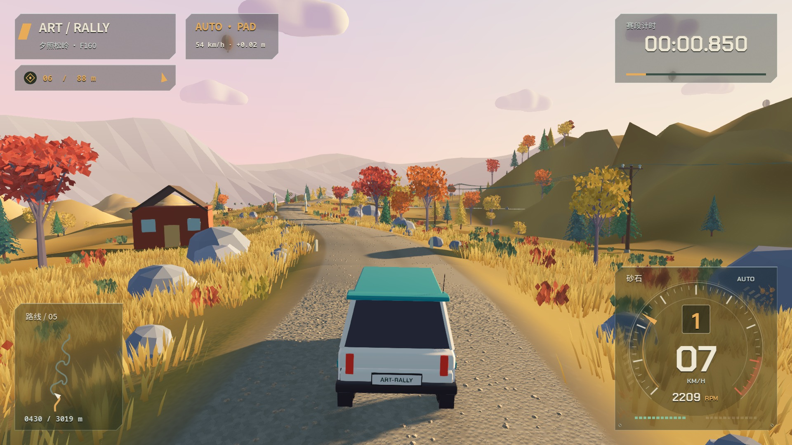
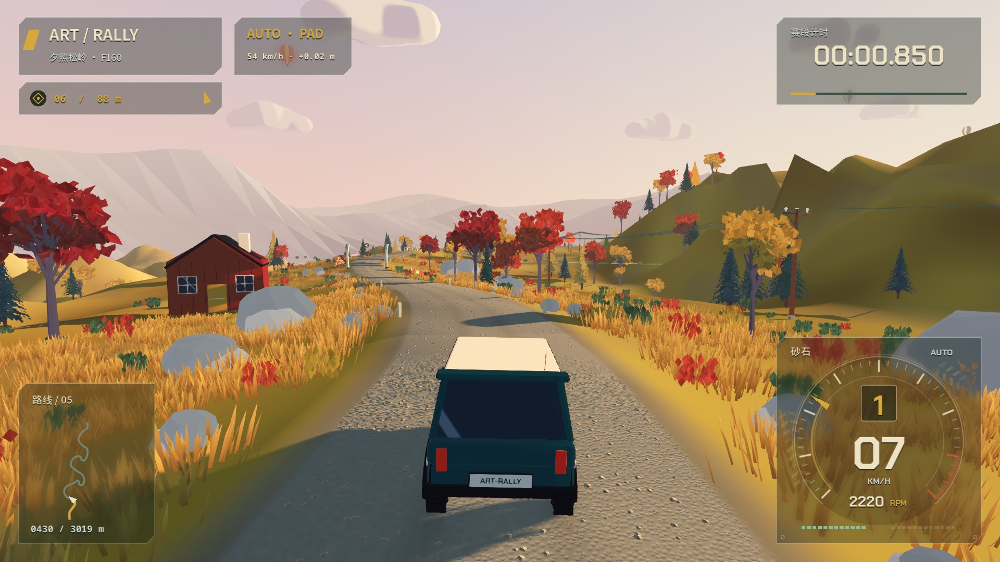
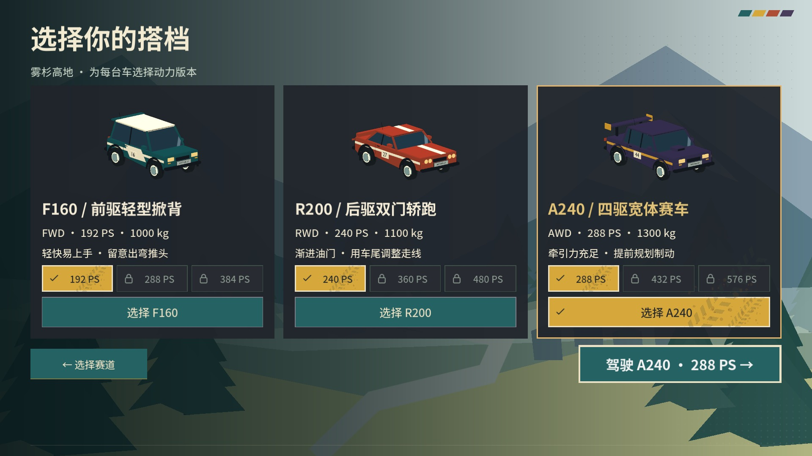
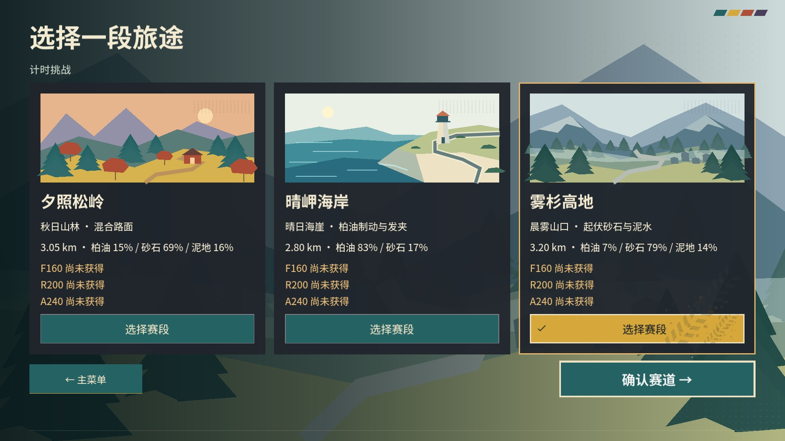
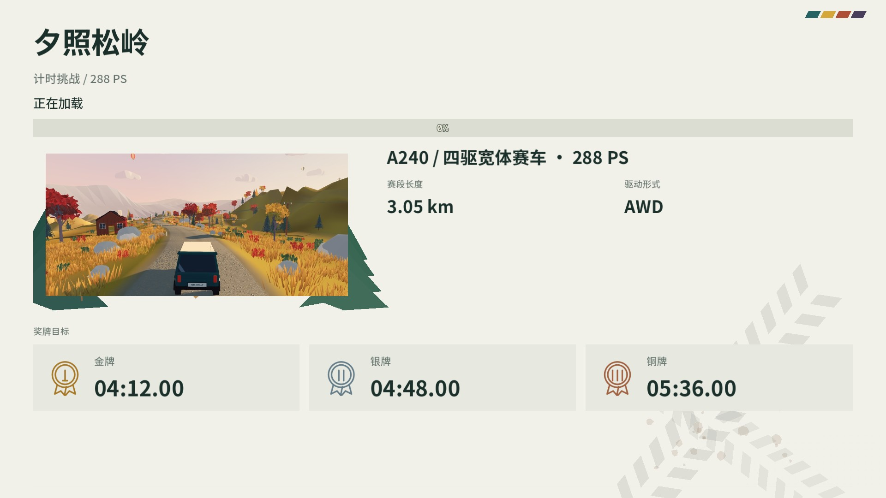
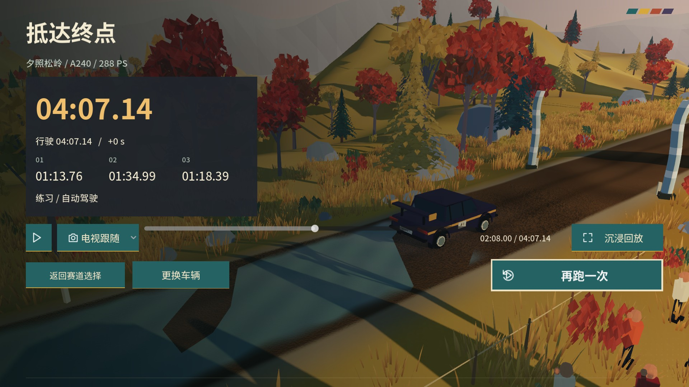
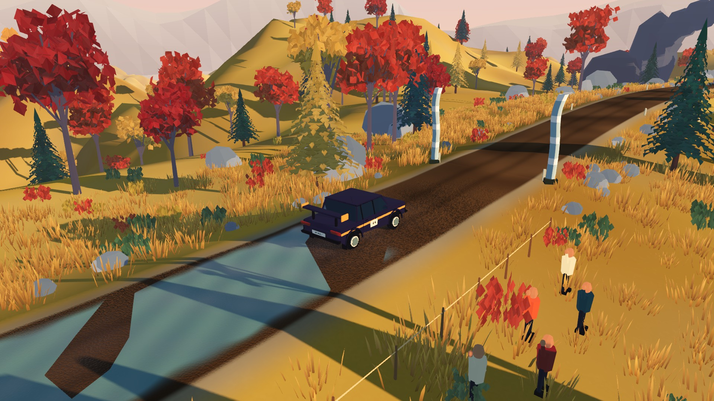
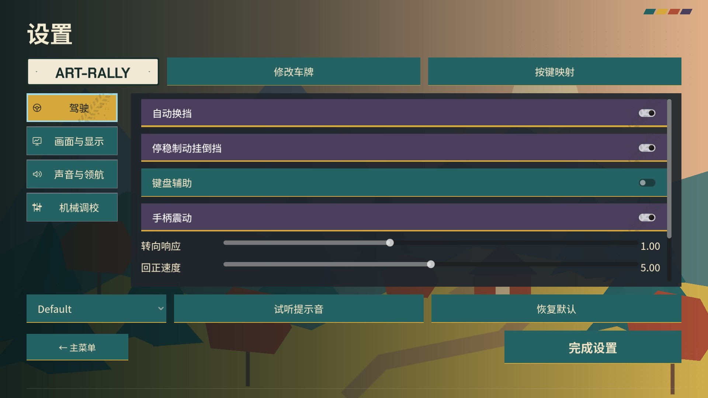

GODOT / ACTUAL BUILD CAPTURES / SCREENPRINT-1
ART RALLY
套色拉力 · 实机对照。车辆墨线、限定色彩、分区明暗与印刷界面。所有画面来自运行中的 Godot，不是概念图。


旧版套色拉力同路线位置、车型与镜头脚本；运动中的采样帧可能略有偏差。路线、驾驶路面、碰撞快照与挑战兼容键另有逐项对照，未因外观改造改变。
运动中的画面
三赛道原生渲染的短驾驶片段，测试会话静音。固定帧率影片导出不用于测量实际运行性能。
界面与回放


三种侧影 / 独立马力选择


赛道选择 / 地貌与路面信息


加载 / 实机预览与套色边饰


成绩 / 原有轨迹在新版本中的回放


电视视角 / 完整实体材质


设置 / 分类、焦点与持久选择
证据与可编辑源
实现与验收记录 · 完整计划 · Blender 工作流
视觉版本不等于新的正式发行版。Windows 实机、实体手柄与最终人工美术验收的状态以验证记录为准。